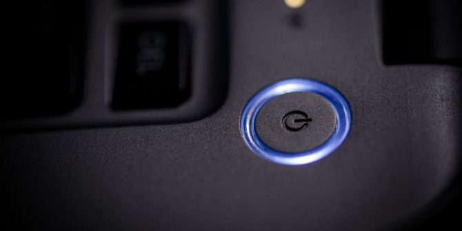
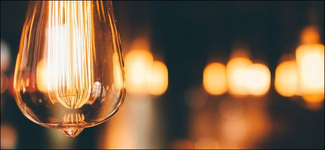

How to Turn on the Board
- Press the button
- Don't touch anything
- Initilise the board (Refer to the next set of instructions)
How to Turn off the board
- Turn off all lights ( [1][Thru][2][1][1][Out][Enter] )
- Save show
- In the menu, select "Power off system"
- Make sure all lights are off, if they are press ok.

Initilizing: DO NOT SKIP
If you skip this, there is a high chance you blow stuff up.
- Set all lights to warmup at 25%
- [1][Thru][2][1][1][At][2][5][Enter]
- Open the house hang
- Select Everything
- Press Ok
- Save a new show file inside a new folder IMMEDIATELY
- [1][Thru][2][1][1][At][2][5][Enter]
- Select Everything
- Press Ok